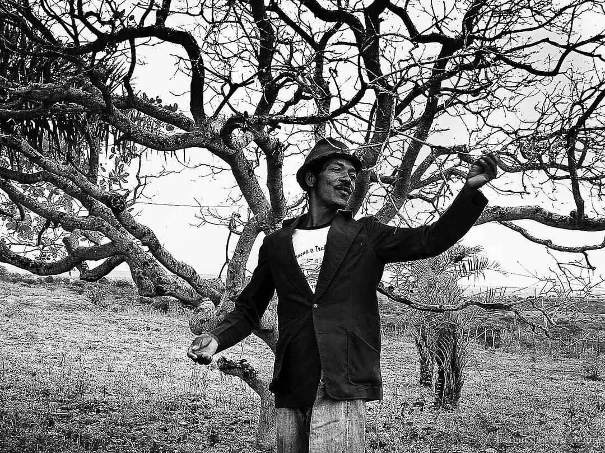

Águeda Camargo Mascarenhas
Quem é
Nordestina e soteropolitana, Águeda Mascarenhas se formou em turismo pela faculdade Castro Alves. Sempre com muito amor pela fotografia e pelo nordeste, registrou pessoas, locais e eventos diversos e únicos.
Atua profissionalmente como fotógrafa, Águeda sempre buscou manter o nordeste em foco, e sempre foi engajada em causas sociais.
Vida inspiradora
Apesar das dificuldades encontradas, Águeda foi uma mãe incrivelmente inspiradora. Cursou faculdade
enquanto trabalhava com telemarketing para sustentar sua filha, Lisa Mascarenhas. Ensinou a importância do
estudo de filosofia e pensamento crítico, além da relevância da arte como ferramenta de mudança social.
Posteriormente, quando sua filha se assumiu trans, Águeda demonstrou bastante apoio nessa jornada, e
continuou a ser o maior exemplo de mulher que ela poderia ter.
Galeria